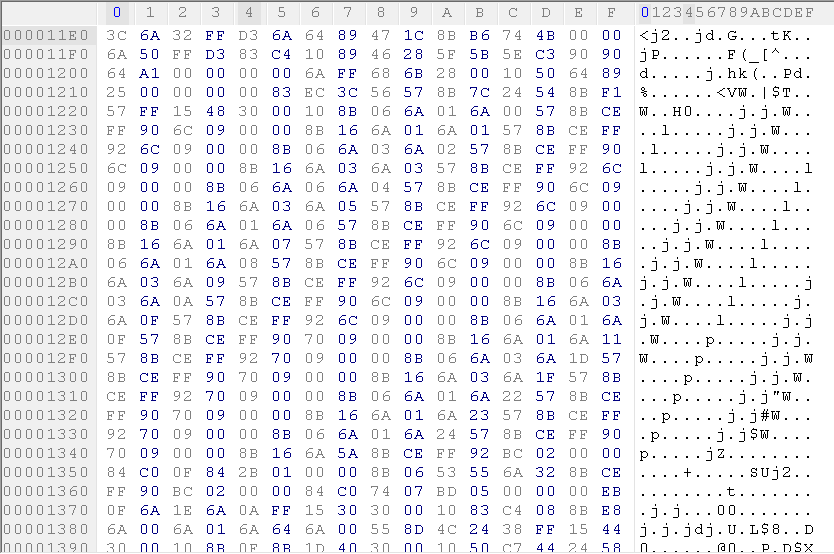
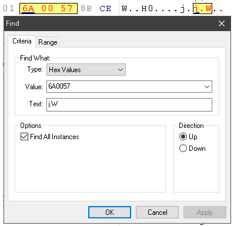
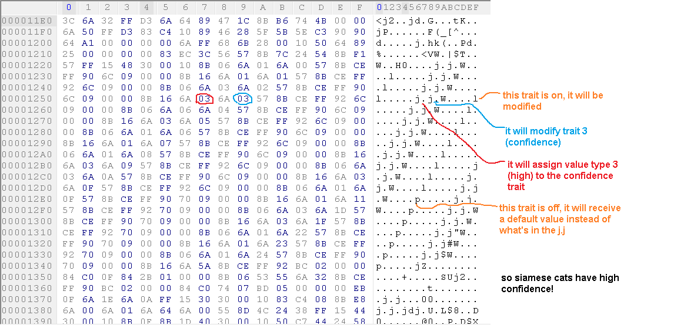
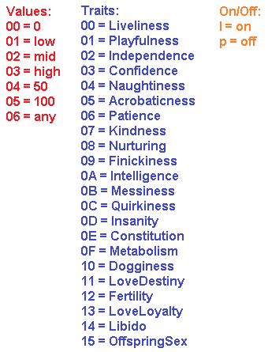
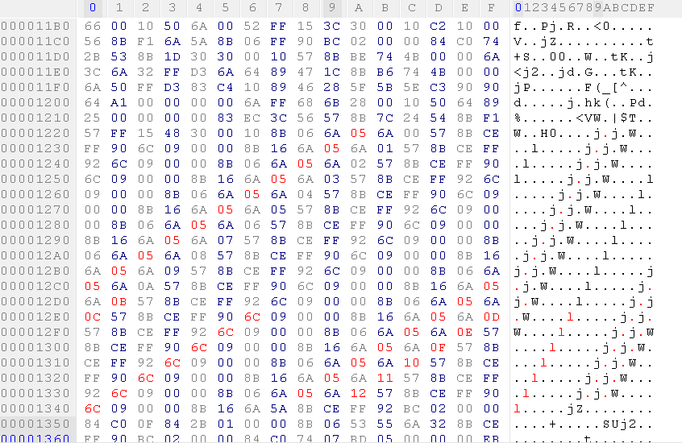
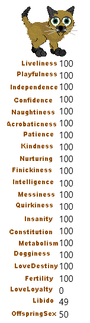
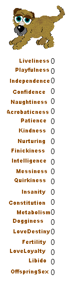

Go back
I will start this lab by crediting the one who discovered the breed personality, Shaina@Kizmet!
Thank you for sharing such an awesome discovery!
With the info you shared, we can now do many new things that were impossible for many years.
First of all, breed files are different from pet files because they have no checksum.
This means that this will make it much easier to edit the personality of a breed than the personality of an individual pet.
If you've touched a hex editor before, this tutorial should be very easy to follow!
In this tutorial we will use the siamese breed. All breeds have a limit to how many traits you can alter.
The siamese breed is perfect because they have many editable traits!
(Special note: the dogz breeds all tend to not have enough editable traits to alter every gene.
This sucks, but I will show you how you can use this info to create fully modified catz and dogz!)
How Do I Do It?
I will open the siamese breed in Hex Workshop (please back up everything you hex!)
Look for a portion in the hex file that looks like this:

To find it you can scroll down until you see the first chunk after the first sea of 00's, or you can search for this value:

NOTE: You cannot do this with a unibreed, their personality chunk is completely missing.
Every j.j.W....l represents a trait.
The period in between the j.j holds the value of the trait, the period between the j.W corresponds to the trait it's modifying,
and the l or p at the very end is an on/off switch. For each of your edited values to work, you will need them to end with an l.


By the way, Jules@Secretpetz made some very useful charts of default values and all the breed traits. Take a look!
Defaults
Catz Traits
Dogz Traits
Let's Do It!
I'm gonna make a siamese cat that has 100 everything! I will assign value 05(always 100) to all of the traits,
and activate any deactivated traits with l.

Every byte I just edited is in red.
Note how I only had enough values to make it to value 12.
The alley cat is the only breed with enough values for full editability, but it will still have perma skinniness regardless of what you change.
Now to adopt our siamese cat! Remember to close hex workshop, or it may prevent your edited breed from being opened by the game.

There's our (almost) 100 everything kitty! Click here to play with Si!
Having Full Control
But what if you wanna edit all the traits without the perma skinniness from the alley breed?
Sadly, we can only do this with the swapping method. We can't make a breed file with all editable traits and without perma skinniness.
And although the siamese breed does a good enough job since not all the traits are useful for editing, none of the dog breeds have as many editable traits.
The only solution to this as of now is to generate individual pets via the swapping method talked about here.
Using this method I was able to use the alley file to create this puppy:

What a cutie! Click here to play with Zero!